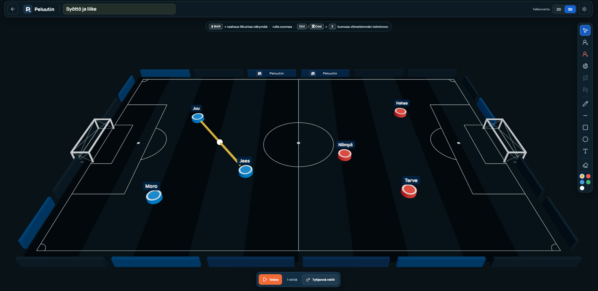

Responsive web app · Junior football
Peluutin
Less stopwatch. More coaching.
A user-friendly web app for managing junior football: track substitutions, playing time, formations, goals and match history, while creating and sharing clear training exercises.
- Role
- Product design & development
- Platforms
- Mobile, desktop & tablet
- Status
- Core working, planner in progress
Match-day coaching is difficult to manage in real time.
Coaches need to track playing time, substitutions and match events without losing focus on the pitch.
Product design and development.
I have shaped the product structure, interaction model and working match-day core.
The match core works; the training planner is still in progress.
The next phase extends the product to 2D and 3D exercise planning across desktop and tablet.

Starting point
The first users are junior football coaches who need to manage substitutions, goals and playing time without letting the tool take attention away from the pitch.
Working core
- Create teams, players and formations
- Manage substitutions and positions
- Track goals, scorers and individual minutes
- Export playing time to Excel
Next phase
The premium direction is a desktop and tablet exercise builder where coaches can switch between 2D and 3D, place existing players on the pitch and describe movement through visual routes.
What I was responsible for
I shaped the product structure, interaction model and working match-day core, then built the feature set into a usable product. The project is intentionally still visible as an active build: the next iteration needs to document coach feedback and decide what belongs in the smallest useful training release.
Design question: How can a coach get useful match information without turning their attention away from the players?
Work in progress · Core working, training planner in active development